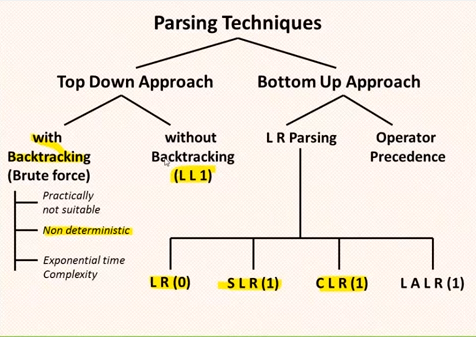

Tem a função de combinar a lista de Tokens criando uma Árvore sintática. E ela deve rejeitar todos os Tokens inválidos.
A análise sintática é mais complexa que a Léxica. Pois precisamos de uma linguagem mais avançada.
Abaixo encontra-se suas características principais.A derivação é a substituição do conjunto de símbolos não terminais por símbolos terminais começando pelo símbolo inicial, ao final desse processo o resultado é a forma como a linguagem deve assumir.
Durante a derivação devemos aplicar as regras de produção para substituir cada símbolo não terminal por um símbolo terminal, isso permite identificar se certas cadeias de caracteres pertence a linguagem, as regras expandem todas as produções possíveis. Como resultado desse processo temos a árvore de derivação.
 Independente do algoritmo utilizado a derivação deve produzir o mesmo resultado, ou seja, a mesma árvore de derivação, caso o resultado seja diferente temos uma ambiguidade.também chamada de top-down: a árvore de derivação correspondente a x é construída de cima para baixo, da raiz (o símbolo inicial S) para as folhas, onde se encontra x. Nesse tipo de análise, é preciso decidir qual regra A→β será aplicada a um nó rotulado por um não-terminal A. A expansão de A é feita criando nós filhos rotulados com os símbolos de β.
Essas árvores são construídas da esquerda para a direita, pois a razão para isso é que a escolha das regras deve se basear na cadeia a ser gerada, que é lida da esquerda para a direita.
Na construção descendente o objetivo é iniciar a análise com uma lista que contém inicialmente apenas o símbolo sentencial; a partir da análise dos
símbolos presentes na sentença, busca-se aplicar regras que permitam expandir os símbolos na lista até alcançar a sentença desejada.
Outra característica é obter uma derivação mais à esquerda para uma sentença. Em termos de árvores gramaticais, a construção descendente busca a construção de uma árvore a partir da raiz usando pré-ordem para definir o próximo símbolo não-terminal que deve ser considerado para análise e expansão.
Diferente da análise descentente temos a sintática ascendente, também chamada de bottom-up: a árvore de derivação correspondente a x é construída de baixo para cima, ou seja, das folhas, onde se encontra x, para a raiz, onde se encontra o símbolo inicial S. Nesse tipo de análise, é preciso decidir quando a regra A→β será aplicada, e devemos encontrar nós vizinhos rotulados com os símbolos de β. A redução pela regra A→β consiste em acrescentar à árvore um nó A, cujos filhos são os nós correspondentes aos símbolos de β.
E ⇒ E+T ⇒ T+T⇒ a+T ⇒ a+T*F ⇒ a+F*F ⇒ a+a*F ⇒ a+a*a
Antes os compiladores usavam dois tipos de analisadores sintáticos. Analisadores baseados em precedência de operadores, sendo adequados à análise de expressões aritméticas. Analisadores do tipo descendentes recursivos implementam a técnica de construção descendente através de um conjunto de rotinas mutuamente recursivas para realizar a análise, sendo normalmente utilizados para outros comandos que não expressões aritméticas.